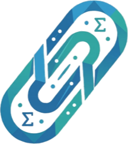

3c1c
·
ClipSAT Animation Studio
Math you can see — powered by
ClipSAT
& customized Manim
16:9 Lesson
9:16 Short
1:1 Card
Atlas (165)
Theater View
Formula HUD
Stage: Dark
ClipSAT Mark
Checking engine…
UI: Dark
Export PNG
Record WebM
Render MP4
THEOREM
Instantaneous Rate of Change
‹ Prev
#001 / 165
Next ›
−
100%
+
⛶ Full
0.00s / 6.00s · F000
Pause
Restart
‹ Frame
Frame ›
Loop
Speed
0.5×
1.0×
1.5×
2.0×
Visual Curriculum Atlas · 165 Interactive Scenes
Explore All 165 Mathematical Scenes
Close (Esc)